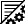

DESERT has two different states. The edit mode offers functions to work on programs. The simulation mode is only available for completely compilable programs. For further processing you have to switch back to the edit mode.
The editor provides all common functions.
Mark, Cut, Copy and Paste. These functions are available as usual. The following table shows the shortcuts.
| Key(s) | Function |
|---|---|
| Arrow Keys | cursor movement |
| Ctrl + Arrow Keys Left and Right | cursor movement by words |
| Backspace | delete character before cursor |
| Del | delete character under cursor |
| Pos 1 | move cursor to front of row |
| End | move cursor to end of row |
| Ctrl+Pos 1 | jump to beginning of listing |
| Ctrl+End | jump to end of listing |
| PgUp/PgDn | scroll by screen pages |
| Tab | emit tabulator spacing |
| Shift + Movement Keys | mark mode |
| Ctrl+A | mark all |
| Ctrl+C | copy marked region |
| Ctrl+X | cut marked region |
| Ctrl+V | insert from clipboard |
Mode: Switches to simulation mode.
During a simulation the current executed statements are highlighted.
Tabelle 2. Color marks
| Color | Description |
|---|---|
| Block | current executed cycle (Step) |
| Statement | current executed statement (Microstep) |
| Comparison | the comparison provides to be true (Microstep) |
| Comparison | the comparison provides to be false (Microstep) |
| Block | the cycle where the simulation is interrupted (Run) |
| Block | current reached breakpoint |
Run: Executes the program until the end state or a breakpoint is reached.
Reset: Resets simulation to the start state.
Step: Jumps to the next state.
MicroStep: Jumps to the next statement.
Mode: Switches back to edit mode.